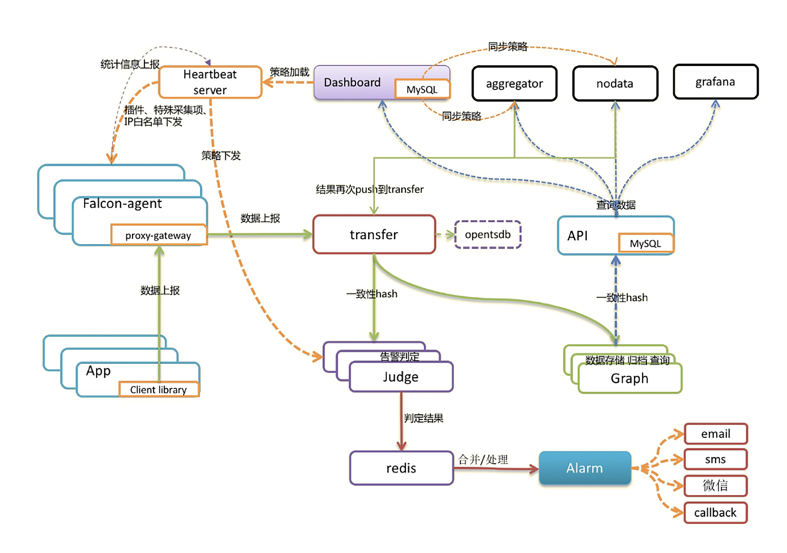
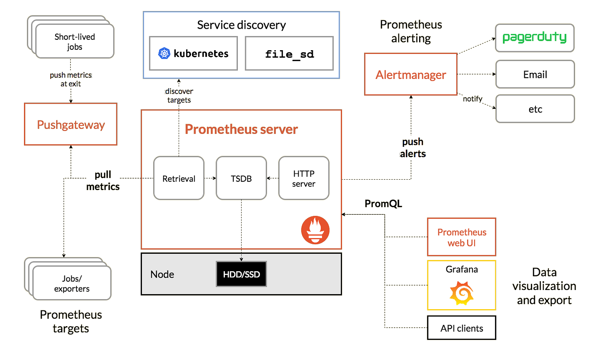
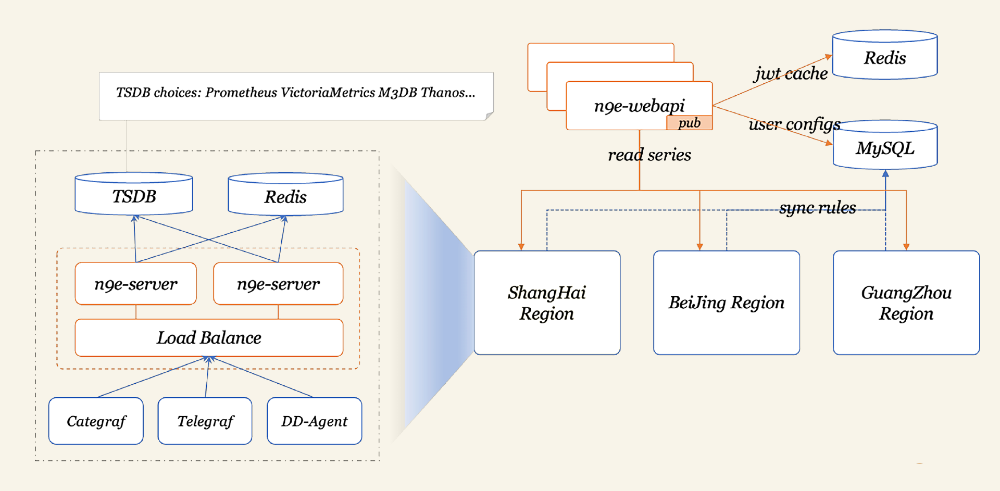

常见监控工具——业界方案横评
老一代整体方案的代表 Zabbix
Zabbix是一个企业级的开源解决方案，擅长设备、网络、中间件的监控。因为前几年使用的监控系统主要就是用来监控设备和中间件的，所以Zabbix在国内应用非常广泛。
Zabbix核心由两部分构成，Zabbix Server与可选组件Zabbix Agent。Zabbix Server可以通过SNMP、Zabbix Agent、JMX、IPMI等多种方式采集数据，它可以运行在Linux、Solaris、HP-UX、AIX、Free BSD、Open BSD、OS X等平台上。
Zabbix还有一些配套组件，Zabbix Proxy、Zabbix Java Gateway、Zabbix Get、Zabbix WEB等，共同组成了Zabbix整体架构。
Zabbix的优点
- 对各种设备的兼容性较好，Agentd不但可以在Windows、Linux上运行，也可以在Aix上运行。
- 架构简单，使用数据库做时序数据存储，易于维护，备份和转储都比较容易。
- 社区庞大，资料多。Zabbix大概是2012年开源的，因为发展的时间比较久，在网上可以找到海量的资源。
Zabbix的缺点
- 使用数据库做存储，无法水平扩展，容量有限。如果采集频率较高，比如10秒采集一次，上限大约可以监控600台设备，还需要把数据库部署在一个很高配的机器上，比如SSD或者NVMe的盘才可以。
- Zabbix面向资产的管理逻辑，监控指标的数据结构较为固化，没有灵活的标签设计，面对云原生架构下动态多变的环境，显得力不从心。
老一代国产代表 Open-Falcon
Open-Falcon出现在Zabbix之后，开发的初衷就是想要解决Zabbix的容量问题。Open-Falcon最初来自小米，14年开源，当时小米有3套Zabbix，1套业务性能监控系统perfcounter。Open-Falcon的初衷是想做一套大一统的方案，来解决这个乱局。你可以看一下Open-Falcon的架构图。

Open-Falcon基于RRDtool做了一个分布式时序存储组件Graph。这种做法可以把多台机器组成一个集群，大幅提升海量数据的处理能力。前面负责转发的组件是Transfer，Transfer对监控数据求取一个唯一ID，再对ID做哈希，就可以生成监控数据和Graph实例的对应关系，这就是Open-Falcon架构中最核心的分片逻辑。
结合我们给出的架构图来看，告警部分是使用Judge模块来做的，发送告警事件的是Alarm模块，采集数据的是Agent，负责心跳的模块是HBS，负责聚合监控数据的模块是Aggregator，负责处理数据缺失的模块是Nodata。当然，还有用于和用户交互的Portal/Dashboard模块。
Open-Falcon把组件拆得比较散，组件比较多，部署起来相对比较麻烦。不过每个组件的职能单一，二次开发会比较容易，很多互联网公司都是基于Open-Falcon做了二次开发，比如美团、快网、360、金山云、新浪微博、爱奇艺、京东、SEA等。
Open-Falcon的优点
- 可以处理大规模监控场景，比Zabbix的容量要大得多，不仅可以处理设备、中间件层面的监控，也可以处理应用层面的监控，最终替换掉了小米内部的perfcounter和三套Zabbix。
- 组件拆分得比较散，大都是用Go语言开发的，Web部分是用Python，易于做二次开发。
Open-Falcon的缺点
- 生态不够庞大，是小米公司在主导，很多公司做了二次开发，但是都没有回馈社区，有一些贡献者，但数量相对较少。
- 开源软件的治理架构不够优秀，小米公司的核心开发人员离职，项目就停滞不前了，小米公司后续也没有大的治理投入，相比托管在基金会的项目，缺少了生命力。
新一代整体方案代表 Prometheus
Prometheus的设计思路来自Google的Borgmon，师出名门，就像Borgmon是为Borg而生的，而Prometheus就是为Kubernetes而生的。它针对Kubernetes做了直接的支持，提供了多种服务发现机制，大幅简化了Kubernetes的监控。
在Kubernetes环境下，Pod创建和销毁非常频繁，监控指标生命周期大幅缩短，这导致类似Zabbix这种面向资产的监控系统力不从心，而且云原生环境下大都是微服务设计，服务数量变多，指标量也呈爆炸态势，这就对时序数据存储提出了非常高的要求。
Prometheus 1.0的版本设计较差，但从2.0开始，它重新设计了时序库，性能、可靠性都有大幅提升，另外社区涌现了越来越多的Exporter采集器，非常繁荣。你可以看一下Prometheus的架构图。

Prometheus的优点
- 对Kubernetes支持得很好，目前来看，Prometheus就是Kubernetes监控的标配。
- 生态庞大，有各种各样的Exporter，支持各种各样的时序库作为后端的Backend存储，也有很好的支持多种不同语言的SDK，供业务代码嵌入埋点。
Prometheus的缺点
- 易用性差一些，比如告警策略需要修改配置文件，协同起来比较麻烦。当然了，对于IaC落地较好的公司，反而认为这样更好，不过在国内当下的环境来看，还无法走得这么靠前，大家还是更喜欢用Web界面来查看监控数据、管理告警规则。
- Exporter参差不齐，通常是一个监控目标一个Exporter，管理起来成本比较高。
- 容量问题，Prometheus默认只提供单机时序库，集群方案需要依赖其他的时序库。
新一代国产代表 Nightingale
Nightingale 可以看做是 Open-Falcon 的一个延续，因为开发人员是一拨人，不过两个软件的定位截然不同，Open-Falcon 类似 Zabbix，更多的是面向机器设备，而Nightingale 不止解决设备和中间件的监控，也希望能一并解决云原生环境下的监控问题。
但是在 Kubernetes 环境下，Prometheus 已经大行其道，再重复造轮子意义不大，所以 Nightingale 的做法是和 Prometheus 做良好的整合，打造一个更完备的方案。当下的架构，主要是把 Prometheus 当成一个时序库，作为 Nightingale 的一个数据源。如果不使用 Prometheus 也没问题，比如使用 VictoriaMetrics 作为时序库，也是很多公司的选择。

Nightingale的优点
- 有比较完备的UI，有权限控制，产品功能比较完备，可以作为公司级统一的监控产品让所有团队共同使用。Prometheus一般是每个团队自己用自己的，比较方便。如果一个公司用同一套Prometheus系统来解决监控需求会比较麻烦，容易出现我们上面说的协同问题，而Nightingale在协同方面做得相对好一些。
- 兼容并包，设计上比较开放，支持对接 Categraf、Telegraf、Grafana-Agent、Datadog-Agent 等采集器，还有Prometheus生态的各种Exporter，时序库支持对接 Prometheus、VictoriaMetrics、M3DB、Thanos 等。
Nightingale的缺点
- 考虑到机房网络割裂问题，告警引擎单独拆出一个模块下沉部署到各个机房，但是很多中小公司无需这么复杂的架构，部署维护起来比较麻烦。
- 告警事件发送缺少聚合降噪收敛逻辑，官方的解释是未来会单独做一个事件中心的产品，支持Nightingale、Zabbix、Prometheus等多种数据源的告警事件，但目前还没有放出。
上面我介绍了4种典型方案，每种方案各有优缺点，如果你的主要需求是监控设备，推荐你使用Zabbix；如果你的主要需求是监控Kubernetes，可以选择Prometheus+Grafana；如果你既要兼顾传统设备、中间件监控场景，又要兼顾Kubernetes，做成公司级方案，推荐你使用 Nightingale。
Cacti
基于基于 LAMP 平台展现的网络流量监测及分析工具,https://www.cacti.net
Nagios
用来监视系统和网络的开源应用软件，利用其众多的插件实现对本机和远端服务的监控,https://www.nagios.org